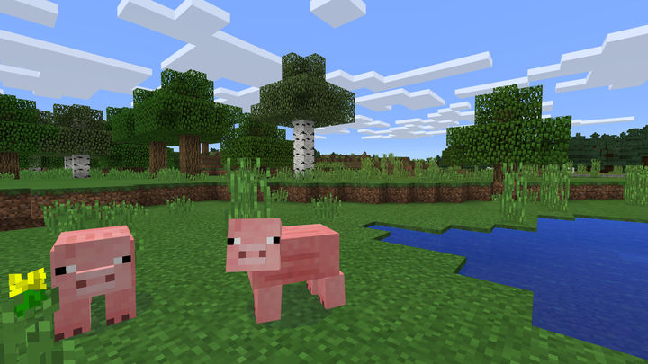
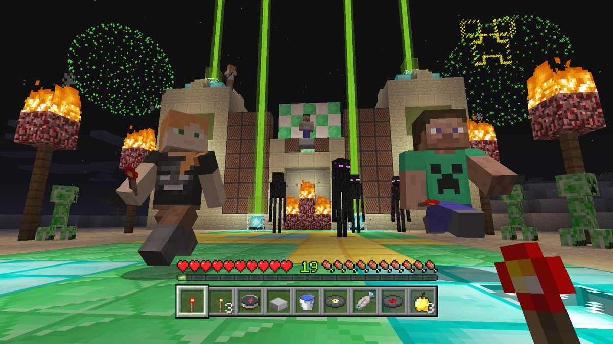
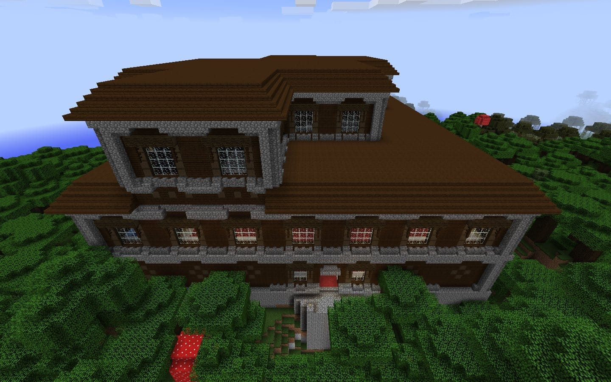
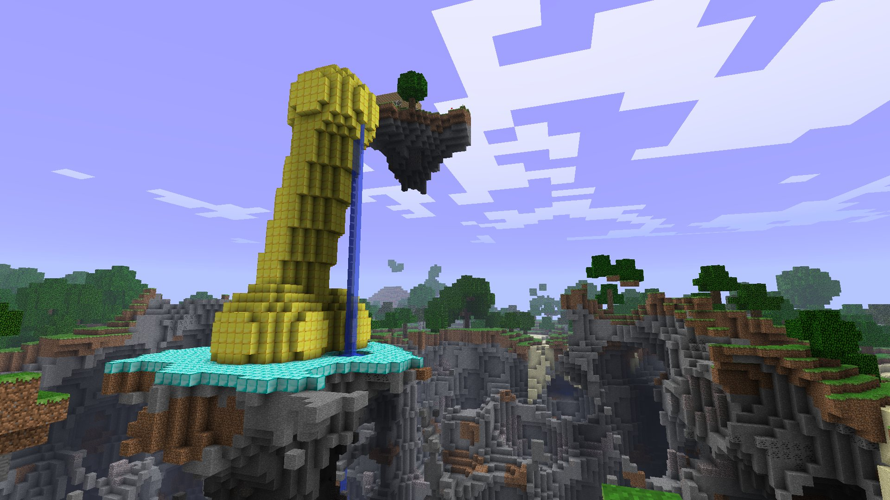

( รีวิว ) Minecraft Minecraft เป็นเกมส์สร้างสรรค์โดยสามารถสร้างอะไรก้ได้ที่เราต้องการ แต่ถ้าต้องการสร้างแบบง่าย ๆ เร็ว ๆ ต้องเล่นใน creative mode เพราะเราจะมีทรัพยากรในการสร้างไม่หมด เช่น ขนแกะ ส่วนใหญ่จะสร้างเป็นผลงานชิ้นโต ๆ กัน เช่นรูปปั้นขนาดใหญ่ที่สร้างโดยขนแกะ แต่ถ้าต้องการเล่นแบบเอาชีวิตรอดจะต้องเล่นใน survival mode หรือ hardcore mode แต่ hardcore modeถ้าเราตายแล้วจะต้องลบ worldทันที แต่ในsurvival modeจะตายกี่ครั้งก็ได้ แต่ทั้ง 2 mode จะเหมือนกันคือ ของทุกอย่างที่เราเก็บไว้กับตัวจะหายไปหมดถ้าเราตาย แต่เราจะไม่ได้เกิดในที่ๆ เราตาย เราจะไปเกิดที่ที่เราเกิดตอนสร้าง world (spawn) หรือเตียงที่เราหลับล่าสุด(ถ้าเตียงยังไม่ถูกทำลาย)






เกมนี้เป็นประเภท ผจญภัยคือ เล่นในแบบที่เราต้องการ โดยไม่มีเป้าหมายที่กำหนดมา แต่เป้าหมายหลัก ๆ ที่ทุกคนอยากทำคือการขุดแร่ให้ได้มากที่สุด เพื่อจะได้นำไปใช้แลกซื้ออุปกรณ์ที่เราต้องการ (สำหรับเล่นบน server)หรือเอามาทำเป็นอุปกรณ์ก็ได้ หรือ ขุดแร่สีเขียวไปแลกของกับชางบ้าน(ในเวอร์ชั่น 1.3 ที่ออก วันที่ 1ส.ค.)(ได้ทั้งเล่นบน serverและเล่นคนเดียว)
เป้ามหายอีกอย่างหนึ่งคือไปที่ “The End” เพื่อไปปราบ Ender Dragonแต่เป็นเรื่องที่ยากมาก เพราะว่า หาก Ender Dragonชนเราเพียงแค่ครั้งเดียว เราก็อาจกระเด็นตกฉากได้ หรือตายเพราะชนทีเสียพลัง 1 ใน 2 แถมมีพลังเยอะมาก เราต้องทำลาย Ender Crystals ให้หมดก่อน ไม่เช่นนั้นการโจมตีของเราจะไม่มีผล และเราก็ไม่สามารถใช้เตียงที่ “The End” นี้ได้ (การใช้เตียง หมายถึงการหลับ เพื่อ save gameแล้ว skipเวลาไปเป็นตอนเช้า)ไม่เช่นนั้นเตียงจะระเบิดทำให้เราตาย :)
แต่ถ้าเล่นใน serverเราไม่สามารถ skipไปตอนเช้าได้ เราต้องนอนรออยู่ ซึ่งถ้าเล่นใน hard modeเวลาจะผ่านไปเร็วสุด และ peaceful เวลาจะผ่านไปได้ช้าสุด ในทุก mode จะแบ่งเป็น 4ระดับความยากง่าย คือ peaceful (ไม่มีสัตว์ประหลาดออกมาเล่นงานทั้งกลางวัน และกลางคืน), easy, normal, hardจะมีสัตว์ประหลาดออกมาได้ตลอดเวลา แต่ความแข็งแกร่งในการโจมตีของสัตว์ประหลาดบางตัวจะไม่เท่ากันในแต่ละ modeด้วย
หากใครชอบเกมแบบนี้ล่ะก็ ห้ามพลาดกันเลยทีเดียว รีบไปหามาเล่นกันเลย!